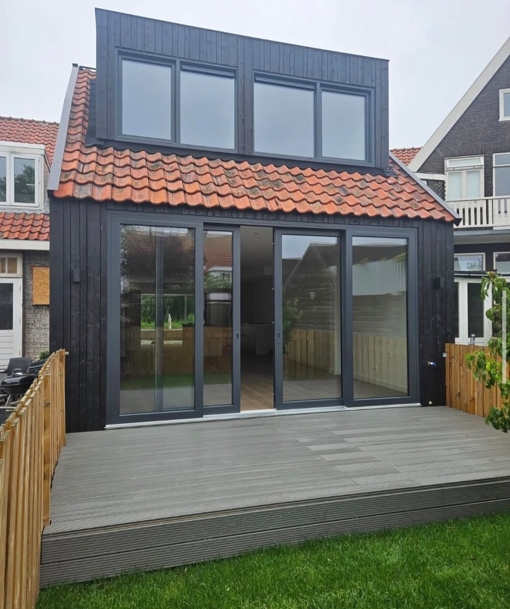

Kort antwoord: begin bij het gebruik
Een aanbouw voelt doorgaans als een volwaardig deel van de woning: goed geïsoleerde vloer, wanden en dak, met glas waar dat functioneel is. Een serre legt de nadruk op licht en zicht, met veel glas in gevel en soms dak. Het woord alleen zegt echter weinig. Een moderne, geïsoleerde serre kan een verblijfsruimte zijn; een eenvoudige glazen tuinkamer is dat niet automatisch.
Vraag daarom niet alleen “wat kost een serre?”, maar leg vast of je de ruimte het hele jaar als woonkamer of keuken wilt gebruiken. Dat bepaalt de constructie, beglazing, zonwering, ventilatie en verwarming — en voorkomt dat offertes verschillende producten beschrijven.

Wanneer past welke oplossing?
- Kies eerder een aanbouw voor dagelijks woongebruik, een keukenwand, kastruimte en voorspelbaar comfort in zomer en winter.
- Kies eerder een serre als daglicht, uitzicht en het gevoel van buiten zitten vooropstaan en je de gevolgen van veel glas bewust meeneemt.
- Combineer beide met een geïsoleerde aanbouw en brede pui, daklicht of lichtstraat als je wooncomfort én tuincontact zoekt.
Veel glas is niet per definitie beter. Oriëntatie, schaduw van bomen of bebouwing en buitenzonwering bepalen of de ruimte op een zonnige dag prettig blijft. Aan de andere kant kan een te diep, gesloten dak daglicht uit de bestaande kamer wegnemen. Laat daarom ook de oude kamer in het lichtplan zien.
Bewaar deze 6-puntencheck
- Gebruik: wordt het woonkamer, keuken, werkplek of seizoensruimte?
- Licht: waar komt de zon op, en welk daglicht blijft in de bestaande kamer over?
- Comfort: leg beglazing, isolatie, ventilatie en buitenzonwering vast.
- Indeling: teken looproute, meubels, keuken en benodigde dichte wanden.
- Constructie: benoem gevelopening, fundering, dak en waterafvoer.
- Scope: splits casco, installaties, afbouw, tekenwerk en vergunning uit.
Gebruik dezelfde zes punten bij iedere aanbieder. Zo vergelijk je geen kale glazen overkapping met een geïsoleerde huisuitbreiding.
Casco-prijsindicatie en regels
De prijs volgt uit formaat, fundering, gevelopening, dak, kozijnen en glaspakket. Onze calculator geeft een casco-prijsindicatie als bandbreedte: een geïsoleerde, wind- en waterdichte schil met afgesproken kozijnen en elektra op casco-niveau. Binnenafbouw, keuken, vloer, stucwerk, vergunning en tekenwerk zitten niet standaard in die indicatie. Lees ook wat casco bij ons inhoudt.
“Serre” of “aanbouw” bepaalt niet of een plan vergunningvrij is. Locatie, maatvoering, gebruik en ontwerp tellen. Doe de officiële Vergunningcheck van het Omgevingsloket en volg het stappenplan bouwen en verbouwen van de Rijksoverheid.
Veelgestelde vragen
Is een serre goedkoper dan een aanbouw?
Niet automatisch. Een eenvoudig seizoensproduct heeft een andere scope dan een geïsoleerde glazen leefruimte. Vergelijk fundering, glas, dak, installaties en afbouw apart.
Kan een serre het hele jaar als woonkamer dienen?
Dat kan alleen als de complete ruimte daarvoor is ontworpen. Kijk niet alleen naar isolatieglas, maar ook naar vloer, dak, koudebruggen, ventilatie, verwarming en zonwering.
Kan ik veel glas in een gewone aanbouw kiezen?
Ja. Een brede pui en daklicht geven veel tuincontact, terwijl dichte dak- en wanddelen ruimte bieden voor isolatie, installaties en kasten.
Wat neem ik mee naar een eerste gesprek?
Een maatvaste schets, foto’s, de gewenste functie en de ingevulde 6-puntencheck. Daarmee worden ontwerpkeuzes en offertes sneller vergelijkbaar.
Vergelijk jouw mogelijkheden
Stel de maat en opties samen voor een casco-prijsindicatie. Daarna controleren we constructie, comfortwensen en bereikbaarheid op locatie.